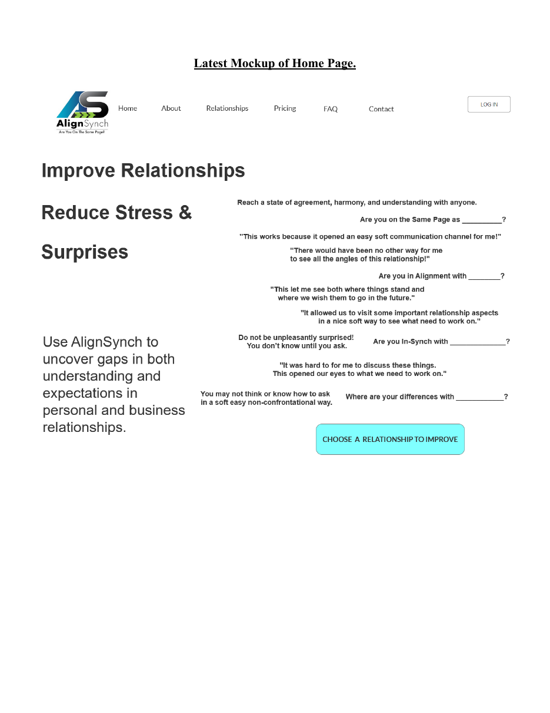
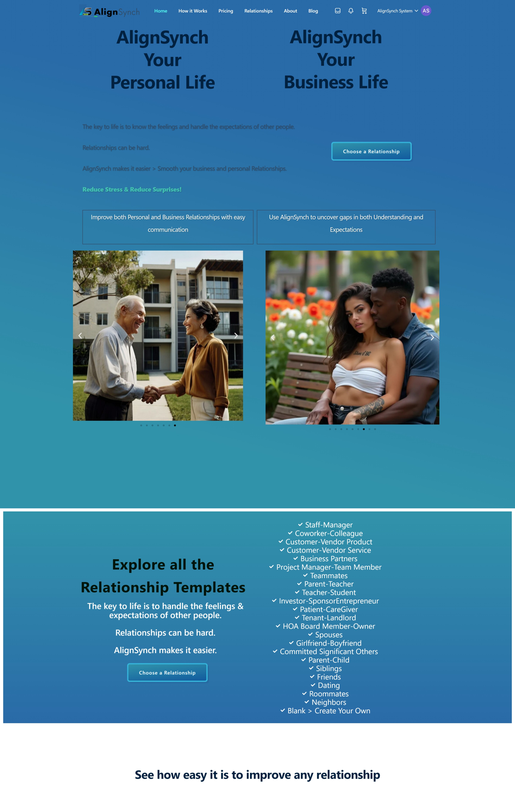
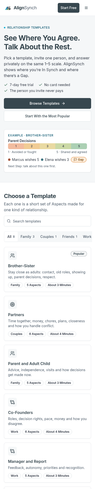

Project Spec 2.0 · Website
The public site. Agreed in 2024 against v2.0 today.
The public site.
Confidential: this page draws on the 2024 Consulting Agreement, which is under NDA (Exhibit C). It stays local and off the public preview. Fees are not reproduced; see Exhibit B.
Agreed
| ID | Page | Agreed in 2024 |
|---|---|---|
| WEB-01 | p5, p81 | “Home, Features, About, Contact, Blog, Support, Documentation, Terms, Privacy” |
| WEB-02 | p81 | “Contact [company, support link] … FAQ” |
| WEB-03 | p81 | “Pricing” |
| WEB-04 | p5 | “Terms, Privacy” |
| WEB-05 | p5 | “Documentation” |
| WEB-06 | p5, p81 | “Community Blog (only our posting of articles)” |
| WEB-07 | p81 | “Reviews … Glossary” |
| WEB-08 | p81, p98 | “Home Main Landing … [with all the SEO tricks]” |
| WEB-09 | p5, p80 | “Mobile Responsive Product Website” |
| WEB-10 | p4 | “build a multi-scope WordPress based responsive web product platform” |
| WEB-11 | p30, p81, p93 | “Relationships are also Watermarked, No-Copy, and No-Print” |
| WEB-12 | p29 | “we need to worry about many languages?” |
| WEB-13 | p82 | “Extra Pages for Walt’s other stuff (Hidden Page 1–7)” |

Exhibit D p16 · Home page mockup
v2.0 Today

v2 home page (spec asset alignsynch_home.jpg, top crop) · Spec asset

Catalogue at 390 px · Bundle 02
| ID | What v2.0 does |
|---|---|
| WEB-01 | Home page on AlignSynch copy; How It Works replays a recorded walkthrough that a check keeps current. |
| WEB-02 | /help (FAQ, articles, contact form stored before it is mailed); /support/articles/<slug>. |
| WEB-03 | /pricing exists. Copy moves to the one Basic plan when PR #1241 merges (PM decision). |
| WEB-04 | Both pages exist. Legal review of their text is the Company’s (see OPS-05). |
| WEB-05 | 51 illustrated docs pages (spec-docs-v2) with file:line evidence, plus in-app Admin › Docs. |
| WEB-06 | No AlignSynch blog. A /news route survives from the base template with quiz copy; whether it is reachable on the AlignSynch build was not verified. |
| WEB-07 | Glossary is written in the docs, not as a site page. No reviews page (no real reviews exist yet to publish). |
| WEB-08 | Per-page metadata, OpenGraph image and noindex on admin pages exist. No sitemap/robots route was found under app/. |
| WEB-09 | Every v2 bundle ships 390 and 1280 references; the docs show both. |
| WEB-10 | Built on Next.js with Postgres (Neon) and Neon Auth, deployed on Vercel: one typed codebase for site, app and admin, with transactions and email WordPress v1 lacked (p33). |
| WEB-11 | Not built. Unregistered visitors see the catalogue and a demo labelled Example; they cannot save or answer. |
| WEB-12 | English only. The source asks the question but does not decide it. |
| WEB-13 | Not built; no content was supplied for them. |
Status
| ID | Requirement | Status | Acceptance (MVP) |
|---|---|---|---|
| WEB-01 | A signed-out visitor can open a home page and a How It Works walkthrough that explain the product and lead to templates and sign-up. | ✓ Delivered | / and /how-it-works return 200 signed out at 390 and 1280 px, each with a start CTA. |
| WEB-02 | A public help centre gives FAQs, help articles and one contact form whose messages reach the support inbox. | ✓ Delivered | /help shows FAQ and the form signed out; a submitted message appears in Admin › Inbox. |
| WEB-03 | A public pricing page shows the plan(s) on sale and leads into the template pick. | ✓ Delivered | /pricing returns 200 signed out and lists exactly the plans the checkout sells. |
| WEB-04 | Public Terms of Service and Privacy Policy pages. | ✓ Delivered | /terms and /privacy return 200 signed out. |
| WEB-05 | User and admin documentation that explains every shipped feature. | ★ Over-Delivered | Every feature in the inventory has a docs page with status and evidence. |
| WEB-06 | A blog where the Company posts articles. | ◌ Tentative | A /blog (or equivalent) lists AlignSynch posts managed from Admin. |
| WEB-07 | Public Reviews and Glossary pages. | ◌ Tentative | /glossary renders the product glossary; Reviews shows only real reviews. |
| WEB-08 | Public pages carry titles, descriptions, social cards and are indexable; internal pages are not. | ◐ Partial | Each public route has a title and description; OG image renders; admin routes are noindex; a sitemap lists public routes. |
| WEB-09 | Every public and member screen works at phone (390 px) and desktop (1280 px) widths. | ✓ Delivered | Each screen has a 390 and 1280 reference with no page-level sideways scroll. |
| WEB-10 | Build the platform on WordPress. | ⇄ Offset | n/a: replaced. |
| WEB-11 | Unregistered views are watermarked and cannot be copied or printed. | ◌ Tentative | n/a until decided. |
| WEB-12 | Multi-language site. | ◌ Tentative | n/a until decided. |
| WEB-13 | Seven hidden pages for the Company’s other products. | ◌ Tentative | n/a until decided. |
★ Over-Delivered: WEB-05: 51 illustrated docs pages (spec-docs-v2) with file:line evidence, plus in-app Admin › Docs.
◐/◌ Gap or Tentative: WEB-06 (Needs a decision: launch without a blog, or add one in a later loop.). WEB-07. WEB-08. WEB-11 (Recommend dropping: nothing an unregistered visitor sees is a saved relationship. Needs Walt’s sign-off.). WEB-12. WEB-13 (Needs Walt to confirm whether these are still wanted, and their content.).
Evidence
- WEB-01 ·
app/(marketing)/page.tsx:16;app/(mainlayout)/how-it-works/page.tsx:2; start/what-is-alignsynch.md · Docs: What Is Alignsynch - WEB-02 ·
app/(marketing)/help/page.tsx:23;app/(marketing)/support/articles/[slug]/page.tsx:26; PR #1238 (FAQ “How do I get started?” v2 answer (open, PM-owned)) - WEB-03 ·
app/(marketing)/pricing/page.tsx:18; start/plans-and-trial.md; PR #1241 (one plan, Basic (open, PM-owned)) · Docs: Plans And Trial - WEB-04 ·
app/(marketing)/terms/page.tsx:6;app/(marketing)/privacy/page.tsx:6 - WEB-05 · README.md;
app/(mainlayout)/admin/docs/page.tsx:2· Docs: What Is Alignsynch - WEB-06 ·
app/(mainlayout)/news/page.tsx:5 - WEB-07 · reference/copy/glossary.md · Docs: Glossary
- WEB-08 ·
app/layout.tsx:63;app/(mainlayout)/admin/docs/page.tsx:46 - WEB-09 · INVENTORY.md · Docs: Quickstart
- WEB-10 ·
package.json:140;package.json:97 - WEB-11 ·
app/(marketing)/relationship-templates/[slug]/demo/page.tsx:3 - WEB-12 · None. That is why it is Tentative or Out of Scope.
- WEB-13 · None. That is why it is Tentative or Out of Scope.
Status words: ✓ Delivered · ★ Over-Delivered · ◐ Partial · ⇄ Offset (replaced; see the row) · ◌ Tentative (not built, deferred or awaiting a decision) · ⊘ Out of Scope (removed, with a citation). Code citations are file:line on main @ 601ce26.